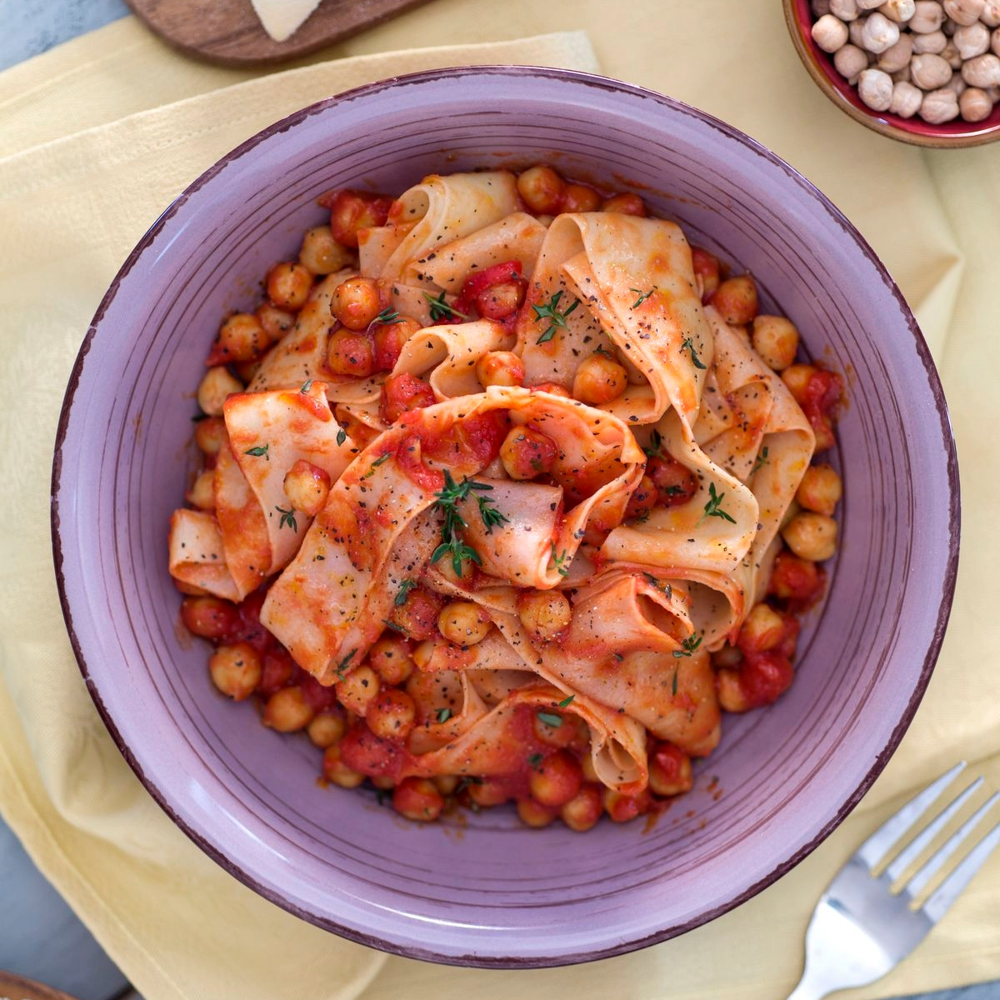
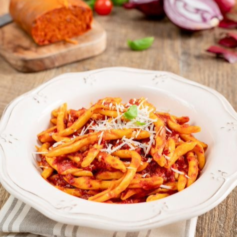

Ricette Salate
In questa sezione troverai tutte le ricette salate tipiche delle regioni italiane, dai piatti di pasta alle pizze, ideali per pranzi e cene gustose.

Basilicata -Le Lagane e ceci-
Ingredienti:
-Semola di grano duro rimacinata 400 g
-Acqua 210 g
Per il condimento:
-Ceci secchi 400 g
-Passata di pomodoro 500 g
-Olio extravergine d'oliva 45 g
-Aglio 1 spicchio
-Peperoncino fresco 1
-Sale fino 1 pizzico
-Pepe nero q.b.
-Timo q.b.
Preparazione:
Per preparare le lagane ai ceci, iniziate ponendo in ammollo i ceci secchi (meglio se per 1 giorno intero) in acqua fredda. Dopo l’ammollo, scolateli e fateli bollire in una pentola capiente per circa 1h/1h e 30 minuti, anche in base a quanto riportato sulla confezione; si possono anche cuocere in pentola a pressione e in questo ultimo caso i tempi si dimezzeranno.
Nel frattempo dedicatevi alle lagane: in una ciotola versate la semola rimacinata e unite l’acqua a temperatura ambiente a filo, poco alla volta, mescolando con una forchetta. Lavorate l’impasto a mano direttamente nella ciotola fino ad ottenere una consistenza liscia ed omogenea.
Fate una pallina di impasto, coprire con pellicola e lasciate riposare a temperatura ambiente per almeno mezz’ora in modo che la pasta si distenda. Intanto, private i semini dal peperoncino fresco e tritatelo, sbucciate l'aglio e dividetelo a metà; quindi fatelo soffriggere in una ampia padella con l'olio poi togliete l'aglio e versate il peperoncino fresco tritato; fatelo soffriggere e intanto scolate i ceci oramai cotti. Aggiungeteli in padella fateli saltare per 5 minuti, aromatizzando con sale, pepe e foglioline di timo. Quindi unite la passata di pomodoro e cuocete a fiamma bassa per 20-25 minuti (se necessario potete aggiungere poca acqua calda per favorire la cottura); dovranno risultare cremosi a fine cottura.
Nel frattempo riprendete la pasta, dividetela in bocconcini e passateli nella macchina tirapasta, impostando man a mano lo spessore sempre più sottile fino ad arrivare a 2mm (potete anche stendere l’impasto con un mattarello).
Dovrete ottenere una striscia di pasta sottile da arrotolare su se stessa. Tagliate ciascun rotolino di pasta realizzando dei pezzetti di 2 cm di spessoree proseguite allo stesso modo fino a terminare tutto l'impasto; potrete poi allargare a mano le lagane e disporle su un vassoio leggermente infarinato coperte con un canovaccio pulito; fate riposare 15-20 minuti. Dopodichè, portate a bollore l’acqua salata in un tegame capiente e cuocete le lagane per pochi secondi quindi scolate la pasta aiutandovi con uno scola spaghetti e trasferitela nella padella con i ceci; mantecate per qualche istante, quindi fate riposare un minuto, prima di servire le lagane ai ceci ben calde!

Calabaria -Le Fileja alla 'Nduja-
Ingredienti:
-Fileja 400 gr
-Nduja 100 gr
-Pomodoro pelato 500 gr
-Pecorino q.b.
-Olio extravergine d'oliva (EVO) 4 cucchiai da tavola
-Sale q.b.
Preparazione:
Aggiungete poco olio extravergine d'oliva in una padella insieme alla 'nduja; accendete il fuoco e lasciate sciogliere il salume.
Quando la 'nduja si è ben sciolta, aggiungete i pomodori pelati, schiacciateli bene per formare una sorta di salsa grossolana. Abbassate la fiamma al minimo e lasciate cuocere il sugo.
Mettete una pentola colma d'acqua sul fuoco e portate a bollore, quindi salate e tuffatevi la pasta portandola a cottura al dente.
Scolate la pasta e mantecatela con il sugo, aggiungete il pecorino e mescolate. Servite la fileja alla 'nduja con un'ulterior spolverata di pecorino a piacere.